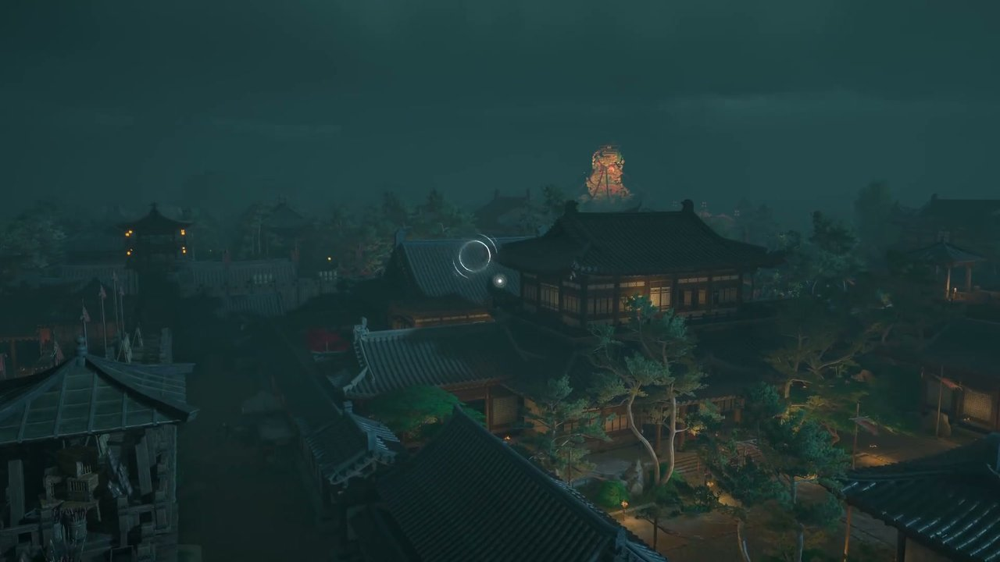
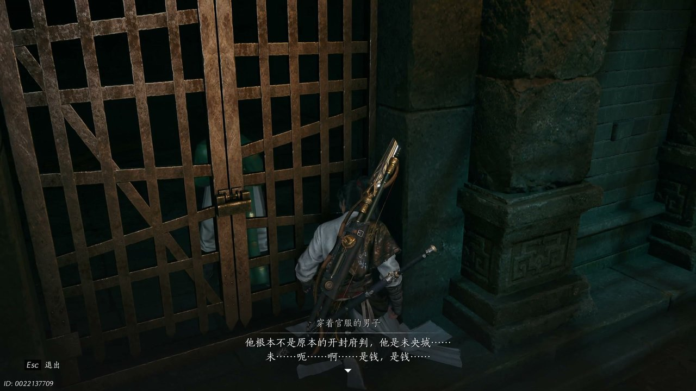
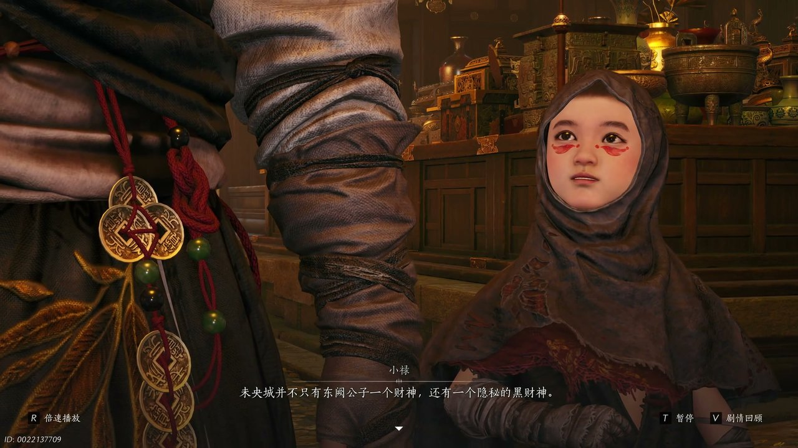
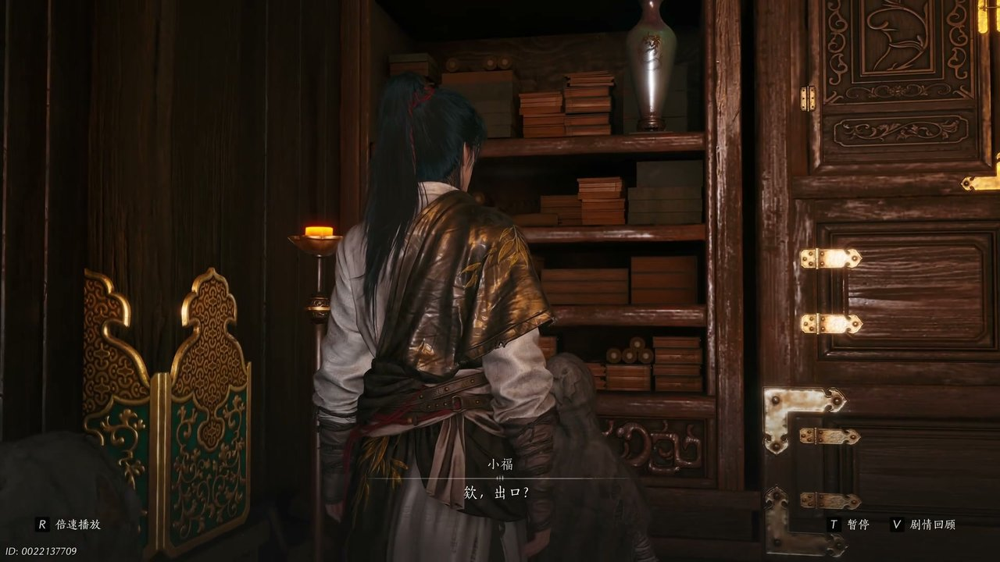
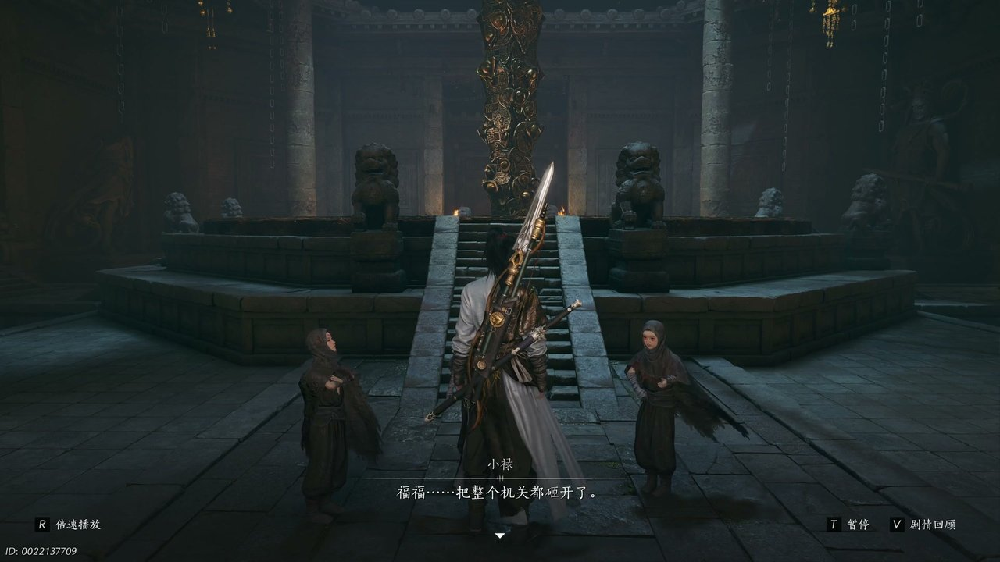
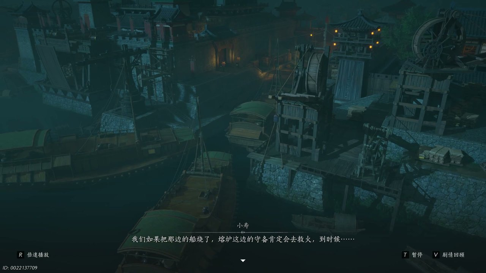

燕云背后的故事：第8集 黑财神
燕云背后的故事：第8集 黑财神

朋友们，上一集咱们说到——盈盈身陷地牢、聚宝盆骗局败露、官兵封锁熔炉地界，三处危机交织令局势步步收紧。新来的朋友可能纳闷，少东家手握锦囊妙计，为何迟迟不敢贸然闯入熔炉重地？简单说，少东家打算借着乞怜之歌扰乱熔炉守卫布局，伺机深入地牢营救被困的寒姨。可他哪知道，熔炉之内还藏着未央城黑财神的隐秘身份，远比史大人的阴谋更加凶险。这不，躲开官兵追查之后，少东家拿着官兵遗落的地牢地图，开始摸索熔炉内部的隐秘通道。

杂乱的街巷里风声四起，少东家一路奔逃，终于甩开身后紧追不舍的大宋官兵，他抬手擦去额角尘土，取出方才从官兵手中夺来的地图仔细查看。他抬眼打量周遭环境，大门处驻守官兵密密麻麻难以靠近，侧门守卫虽少，可地图标注地牢并不在这个方位。他四下踱步观察建筑格局，脚步停顿在一间偏室之上，恍然醒悟地牢应该在这个房间下面。屋内金火带领一众手下肃穆列队，口中念诵着供奉口诀，副都头守在地牢专属钥匙，神色谨慎不敢有半分懈怠。金火厉声叮嘱手下，关押的盈盈是重要要犯，必须打起十二分精神，但凡发现可疑踪迹即刻上报。少东家隐匿在梁柱阴影之中，隐约听见官吏私下交谈，提及史大人便是众人口中的活财神，只要顺着财神心意行事，便能从中捞取不少油水。

少东家贴着墙壁挪动位置，暗处一名衣衫凌乱、身着官服的男子被看守押过，神情癫狂不停呼喊想要冲出牢笼。少东家趁看守不备将男子拉进隐蔽角落，轻声安抚让他慢慢诉说内情。少东家开口询问：“你知道什么？”男子情绪激动，脱口而出眼前的官吏根本不是原本的开封府派，而是未央城之人假扮。男子口中不停念叨着铜钱，声称所有钱币的秘密都藏在熔炉内部，满心执念想要重回熔炉之地。铜钱晃动的细碎声响钻入少东家耳畔，他一时心神恍惚陷入眩晕，恍惚之间竟看见孩童身影围在身前。小寿、小福、小禄三名孩童佯装守卫拦下少东家，故意打趣让他接连称呼自己大侠，嬉闹过后小禄道出真相，是元宝带领众人一同闯入熔炉禁地，不少被关押的百姓已经被幻境折磨得失了神智。

孩童领着少东家深入熔炉内部狭长甬道，四周墙壁阴冷潮湿，通道蜿蜒曲折看不到尽头。小福望着前方光影晃动的身影，疑惑那究竟是不是财神爷，少东家一眼认出那是史大人，忍不住斥责这分明是那姓史的狗官。小寿满脸不解，不明白史大人为何要把自己装扮成财神模样，一旁的小禄轻声解释，黑白财神都供职于未央四大掌柜，各自侍奉不同主人，回阳城并不只有东阙公子一个财神，还有一个隐秘的黑财神，只是这位财神早已消失多年。少东家心中一震，串联起史大人的行事风格，终于明白史大人便是消失已久的黑财神。几人继续前行，却发现前路被堵死，四周找不到通往内间地牢的出口，小寿满心焦躁，认为折返之路遍布官兵，如今一行人已然陷入进退两难的境地。

甬道之内阴风阵阵，烛火被气流吹得左右摇晃，小福惊恐大喊有鬼吹动烛火，引得众人一阵慌乱。少东家却十分镇定，断定气流代表外界还有连通的房间，果然出口就在此处。他抬手示意众人安静，顺着风的方向探查，发现一处高台被花瓶遮挡，那只花瓶花纹别致，摆放位置异常，明显是开启通道的机关。小寿连忙招呼小福一同上前查看，之前二人发生过小争执，此刻小寿主动道歉，招呼伙伴一同动手。众人不慎脚下打滑摔倒在地，缓过神之后小禄询问少东家是否有开启机关的办法，少东家打算独自前往前方探查其他通路，叮嘱孩童们原地等候。此时微弱的呼救声传来，盈盈的声音穿透石壁，一声声少侠救我让少东家心头一紧，他循着声音快步向前，竟在幻境之中看见了寒姨的身影。

幻境之中的景象十分真切，少东家伸手想要触碰盈盈，眼前画面却骤然消散，只剩下一件衣物散落在地面。小寿见少东家神情恍惚，连忙开口安抚，询问他方才所见的景象，告知少东家眼前并无盈盈身影。小禄解释，是屠夫发力砸开机关通道，众人才得以顺利走到此处，枝头挂满串串铜钱，随风晃动发出清脆声响。少东家恍然大悟，方才令自己陷入幻境的，正是这些铜钱发出的声响，小寿连忙提醒众人千万不要触碰水钱树，此物会让人陷入虚妄幻境难以脱身。就在众人准备继续赶路之时，官兵的呼喊声骤然响起，大批守卫发现了众人踪迹，朝着渡头方向合围而来。小寿询问少东家能否独自应对大块头领，主动提出带着另外两名孩童处理其余官兵，双方迅速分开行动，准备执行声东击西的计策。

小寿观察到渡口停泊着不少船只，当即定下计策，若是将船只烧毁，熔炉这边的守备肯定会去救火，到时候就可以趁机进去。他询问少东家选择前去烧船还是独自潜入熔炉内部，少东家担心孩童们难以脱身，询问他们能否顺利撤离，小福十分自信，直言三人最擅长脱身逃跑，小寿连忙纠正，称三人擅长应对敌人。少东家自认畏惧火焰，决定独自潜入戒备森严的熔炉核心区域，让三名孩童负责烧船吸引守卫注意力，并且叮嘱众人务必小心行事。孩童们依照计划点燃渡口船只，火光冲天而起，熔炉外围守卫果然纷纷赶往渡口救火，守备力量大幅减弱。少东家借着混乱局面，顺着孩童留下的标记，顺利靠近熔炉核心地带，大批守卫依旧死守入口，拼命阻拦任何人靠近财神所在之地。
这一集看下来，我最大的感受就是层层幻境之下，未央城的势力布局逐渐浮出水面。上一集里我们只知道盈盈被困地牢、聚宝盆是幻术骗局、官兵全城搜捕百姓，到了这一集，我们知晓史大人是黑财神、熔炉暗藏幻境机关、绣金楼暗中操控官吏、孩童精通脱身计策四条关键线索。黑财神史大人真正的目的是什么？绣金楼与未央城究竟是什么关系？帷帽神秘女子究竟是什么身份？所有线索全部汇聚到醉花阴之地，少东家告别东阙公子之后，意外遭遇神秘帷帽女子，即将开启新一轮的博弈。下一集，醉花阴赌局开启。有人好奇帷帽女子提出的承诺究竟是什么？洛神的下落能否顺利探寻？评论区留下你的想法，持续关注，咱们下一集踏入醉花阴秘境、揭开神秘女子身份！
关于我们
📱 公众号名称：三天游戏
✍️ 作者：曾三天
扫码关注公众号，获取每日最新资讯

商务合作与版权
商务合作 / 内容投稿 / 品牌推广
请关注公众号「三天游戏」后台留言联系
版权声明：本文由作者整理，转载需注明出处。